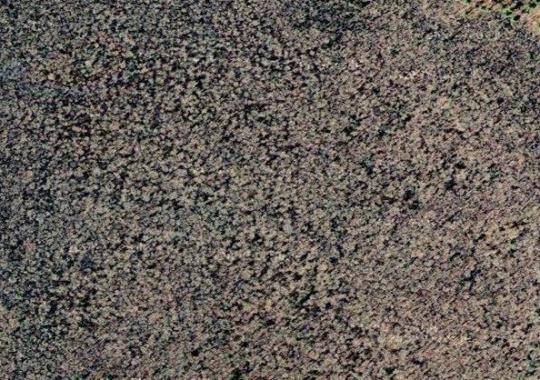
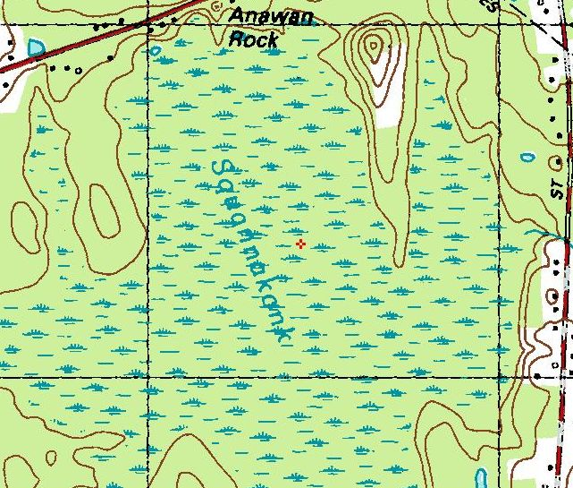
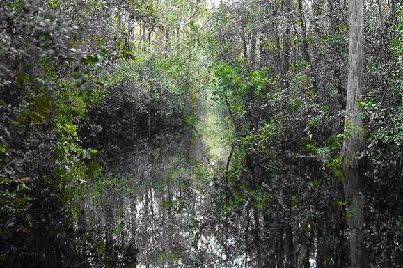
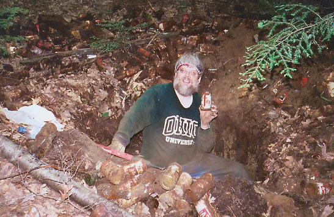
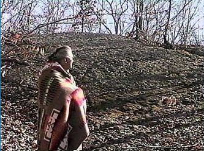

Haunted Swamp Hash
Run #1001(!), June 6, 2005
Hare: WIPOS
Location: Anawan Rock, Rehoboth, MA.
Weather: 60’s, Cloudy with Tornadoes in the Berkshires.
Present: Dr W.H.O., Bondo Jovi, Tinker, Oozing SD, SESYB, Basket Boom Boom, Dry Foot Fairy, Ben, Seamus.
Commemorating: The D-day invasion at Omaha Beach, Normandy. The casualties were comparable.
The Run:
Low-flying UFOs, Bigfoot creatures, cattle mutilations, Indian curses and ghostly apparitions. These are just a sampling of the wide range of paranormal phenomena that are constantly occurring in the area of Massachusetts known as the Bridgewater Triangle. First described by researcher Loren Coleman in the 1970s, the Triangle is an area of about 200 square miles that includes the towns of Abington, Rehoboth and Freetown at the angles of the triangle, and Bridgewater, West Bridgewater, North Middleboro, Segreganset, Dighton, North Dighton, Berkley, Myricks, Raynham, East Taunton, and Taunton inside the triangle. Unexplained phenomena are also common in the towns just outside this region...
One of the sites associated with ancient Native American activity in the Bridgewater Triangle has earned a reputation for being haunted in modern times. Along Route 44 in Rehoboth lies the boulder known as Anawan Rock. Located in a swamp, it was here that the Wampanoag chief Anawan surrendered to the colonists, thus ending King Philip's War. According to local belief, the angry spirits of the warriors captured that day continue to haunt the spot. Witnesses report frequently seeing or smelling smoke in the area, despite the fact that no fire can be located. One pair of visitors to Anawan Rock saw a bonfire blazing atop the rock, which disappeared before their eyes. Another individual was scared away from the site by a loud angry male voice shouting, "Iootash, iootash!" Later, it was found that this word is an Algonquin term meaning "stand and fight". Recently, ghost hunter Courtney Chadwick visited and photographed the site. When the pictures were developed, one showed what appears to be a cloud of smoke obscuring part of the image. Nothing unusual had been seen when the photo was taken!...
Recently, on June 6th, 2005 there were multiple simultaneous and independent reports of strange activities at Anawan Rock. An unusually foul odor was noted by several neighbors. Strange cries, whistles and bugle calls were heard emanating from within the Squannakonk swamp. Piteous wails as if from those in mortal pain seemed to be moving deeper and deeper into the impassable mire itself. We will probably never have a reasonable explanation for this...
Ref: The "Bridgewater Triangle"
Any WIPOS trail in virgin territory is certain to be trouble. Nevertheless, defying all common sense, the usual crowd arrived promptly, initially eager for another hash. But the atmosphere soon changed. The air was thick and miasmic, and those there were soon unaccountably gloomy. A sense of doom, of a hovering evil presence was felt by the group, as they put on extra bug repellant and ivy block. Many actually considered claiming that they needed to leave early to pick someone up at the airport. It has worked in the past. But what was happening to the usually intrepid hashers? SESYB mentioned that she had heard that this site was haunted by the spirits of the Native Americans who died here 330 years earlier. Bondo confirmed this (being one-fourth Native American of Winkawankcan descent, a small splinter tribe of the Narragansetts). Could it be that this hash was cursed? They would soon find out. They were off at 6:30..
Trail led southeast straight to the rock itself. This was a well-marked, graded, and enjoyable trail. Almost like a gas pipeline. For fifty yards. They climbed over the rock. Then came the first sign of their impending fate. A paper square marked “HHH” was stapled to a tree at the edge of the swamp. Led by Oozing and Basket, they followed the trail into the swamp heading south. At first, they all tried to keep their feet dry. It was soon clear that this was hopeless, and a line formed. The leaders Basket, Oozing and WHO gradually distanced themselves from Bondo and Tinker. Dry Foot and SESYB tried to stay DFL in the hope that behind WHO and Bondo some form of rough trail (like a gas pipeline) would result from their passage.
Trail led south and west at first. The trio in front traded the lead as the hare’s marks meandered chaotically (as
if he had been pursued by the spirits of dead warriors). There were no trails. There were no deer paths. There were no
gas pipelines. In fact, there was no evidence save the paper squares that anyone had ever passed this way before. There
was no chance of turning back, as all the marks faced the hashers. There were no features to the swamp that could be
used as landmarks. It was just swamp, swamp, and more swamp.

Satellite View of Squannakonk Swamp. Note lack of
interesting details.
And more swamp.

Topographic of same. Still nothing of interest. Note the
lack of gas pipelines.
Finally, a check was encountered. Overjoyed, WHO and Oozing promptly took the falsies while Basket turned left, due south on true trail. SESYB and Dry Foot, understandably tired of the posterior view of Bondo Jovi, used the opportunity to pass and catch up with the lead pack. A few lovely purple swamp orchids were found, further slowing Bondo down as he felt it necessary to crush each one into submission. Trail gradually turned southeast. Not a pipeline to be seen.
A cyclic phenomenon was noted. It was about 30-50 yards of swamp, usually up to mid-calf, although sometimes it
crossed the thigh. Then, climbing up the bases of small cedar trees (and stepping into the hidden holes between the
roots), relatively dry areas lasting about 20 yards would be reached. These were invariably overgrown with unavoidable
bull-briars. Considerable blood loss resulted and if the hare had been present at this point, it is unlikely he would
have made it back out alive. Especially after the hashers rinsed their fresh cuts in stinking mud!.

This looks a lot nicer than it actually was!
The mosquitoes (in an area endemic for both West Nile Virus and Eastern Equine Encephalitis) were a constant presence,
although the ticks were disappointingly rare. Few hashers found more than two or three. Some lucky ones did encounter
webs with stinging spiders, though. And the mold and fungal spores, pollen, and dust started all of them coughing and
wheezing. There’ll be no more normal chest X-Rays in the RIH3, for a while. But, on the bright side, there was virtually
no poison ivy. No Native American ghosts were sighted. And, there were ALMOST no leeches, mud wasps, porcupines, tse-tse
flies, pit vipers or dingoes.
“A dingo ate my baby!”
The hashers’ progress was accompanied by some noise. There were the usual bugles, horns, whistles and ”on-on”s. Falling trees, ripping garments and flesh, splashes, noisome bubblings, and snapping branches also marked the passage of the dispirited hashers. Bondo pre-rated the run a record breaking 47 F***s. His sentiments were loudly seconded by the equally foul invectives of the distraught Basket. Dry Foot swore revenge would be his at next week’s hash when he would hare. SESYB vowed vocally and intemperately that she would not be happy until the hare’s genitals were ripped off and dangling from a string around her neck. Oozing volunteered to perform the necessary surgery. Dr WHO, tree-trunk club in hand, offered to provide anesthesia. Tinker was somehow enjoying the outing, and protested.
The trail turned east. WHO guaranteed he knew what was ahead: a gas pipeline. He was surprised when Dry Foot led the FRB’s out onto New Road. The hare met them. The rest emerged from the swamp. 54 minutes of swamp time, according to the official swamp-time-keeper Tinker. A new record! Back on a flour trail, they turned north on New Road. They passed the gas pipeline (all ignoring it, except Dr WHO. It is a damn fine gas pipeline!) and came to a check. True trail was right (east) on Maple. The powerlines were found. North again, across 44 to a few mud puddles (cleaning the running shoes nicely; it’s all relative!) and a “B”, just past an abandoned refrigerator. Twice the distance covered in the swamp, in one-tenth the time!.
Dry Foot, usually a beer hound, was first and his searches came up empty. WHO and Basket likewise, feverish from their time in the swamp,
could not find the beer. The rest of the pack arrived, led by Oozing. The hare brought out
the beer. The hare brought out the mosquitoes. As always, the hare was impregnable. Bondo
was oblivious. But the rest complained mightily. Songs were impossible, with all the whining. So after one or two
beers, they packed up and continued north..

A Bondo imitator, finding Beer.
They came to Chestnut St, turned left and ran to New Street. South to 44, and right (east) on 44 back to the parking lot. Total was about a mile. On roads. Pathetic! What about the gas pipeline, hare? They crossed it, again the hare failing to take advantage of the opportunity. They all straggled in. Tinker insisted that they hold the ceremony upon the rock itself. Few wanted to actually walk the 50 yds. But eventually they did, hoping the altitude might discourage some of the swarming mosquitoes.
Ratings for the run: virgin territory, angered Native American ghosts, swamp, thorns, mosquitoes, and unequalled shiggy vs. 2 miles of pavement, lack of losses, lack of checks, lack of virgins, lack of gas pipelines and lackluster beer: total of 6.9! Hashit to Oozing for thoughtfully removing a gnat from Basket’s eye on trail. What was he thinking? [Note: he responded to this award by sending the Hashit careening down from the rock, where several Native American wraiths took it away for their own spectral uses. Ghosts apparently need a comfortable place to sh*t, too! But, I digress.]. They swang low and climbed down the hill. But the Hashit is gone, perhaps to the spirit world! Beware!.
On On On was at Tort’s, back in Seekonk. 35 oz beers and free popcorn are fine. But Monday being Karaoke night is not! Food was ordered, beer was delivered. And of course, Basket had to sing. Accompanied by an off-key Oozing and a bleeding Dr WHO, their rendition of “Hello penis my old friend” left much to be desired. And one of Dr WHO’s patients was watching. So much for that referral pattern! It was a sad ending to a fine evening. But it was neither more, nor less than expected..
On On

“Those white devils have done it again! Unk-gawa!”